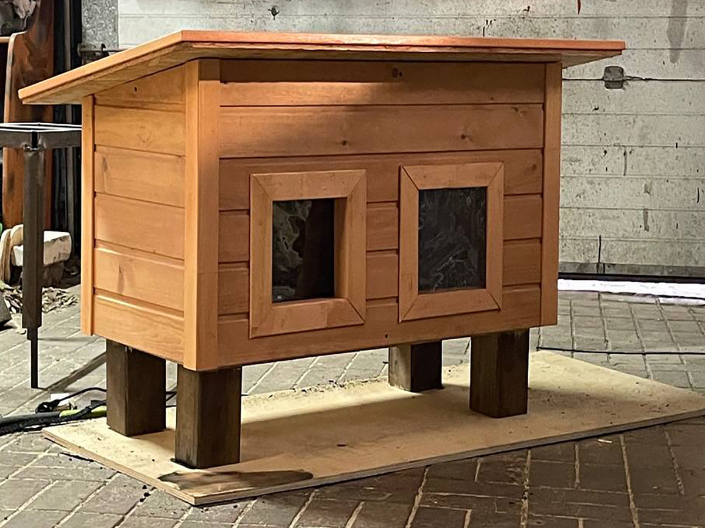
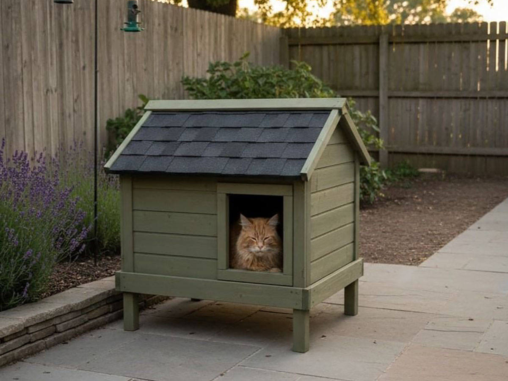
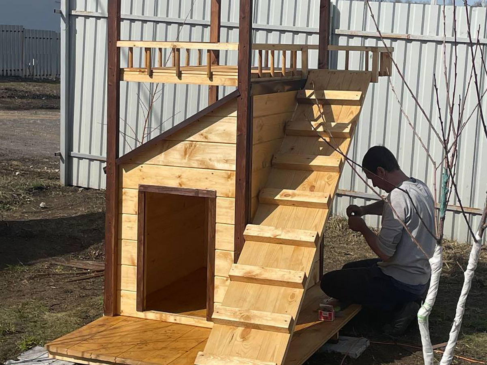
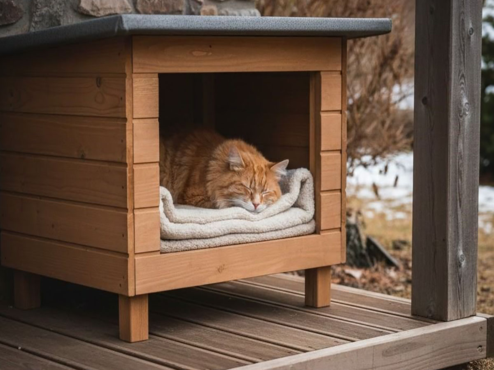

Домики для кошек
Домики для кошек на заказ в Самаре
Изготавливаем удобные, безопасные и красивые домики для кошек для дома, дачи и улицы. Проектируем конструкции под конкретные условия размещения, количество животных и пожелания владельца. Делаем как компактные домашние модели, так и утепленные уличные домики для круглогодичного использования.
Индивидуальные размеры • Безопасные материалы • Утепленные варианты • Доставка и установка по Самаре и Самарской области
Примеры наших работ
Небольшая подборка реализованных домиков для кошек: домашние, уличные и утепленные варианты под разные задачи.



Изготовление домиков для кошек под заказ
Домик для кошки - это не просто аксессуар или декоративный элемент. Для животного это личное пространство, место отдыха, укрытие от шума, сквозняка, холода или лишнего внимания. Кошке важно чувствовать себя в безопасности, иметь возможность уединиться, спокойно спать, наблюдать за происходящим вокруг и находиться в комфортных условиях. Именно поэтому качественный кошачий домик должен быть не только красивым внешне, но и действительно удобным в повседневном использовании.
Мы изготавливаем домики для кошек на заказ в Самаре, ориентируясь на практичность, надежность и комфорт питомца. В отличие от типовых готовых изделий, индивидуальное изготовление позволяет учесть реальные условия эксплуатации: будет ли домик использоваться дома или на улице, нужен ли утепленный вариант, сколько животных будут им пользоваться, какие размеры и особенности конструкции необходимы. Благодаря этому клиент получает не случайный стандартный вариант, а продуманное решение под свою задачу.
Наши домики подходят для частных домов, дач, квартир, террас, хозяйственных участков, приютов, передержек и питомников. Мы можем изготовить как компактный домик для одной кошки, так и более просторную конструкцию для нескольких животных, с утеплением, дополнительными полками, секциями, лежанками и другими удобными элементами.
Почему стоит заказать домик для кошки у нас
- Изготовление по индивидуальным размерам и под конкретные условия размещения
- Безопасные, практичные и долговечные материалы
- Возможность сделать утепленный уличный домик для холодного сезона
- Продуманная конструкция с учетом привычек и комфорта животного
- Аккуратный внешний вид и возможность адаптации под интерьер или участок
- Решения для одной кошки, нескольких животных, приютов и питомников
Почему важно правильно выбрать домик для кошки
Многие владельцы считают, что для кошки подойдет практически любой домик, если он выглядит симпатично. Но на практике животное может просто не пользоваться конструкцией, если она неудобная, слишком тесная, холодная, неустойчивая или расположена без учета его привычек. Кошки чувствительны к своему пространству: им важно, чтобы внутри было спокойно, защищенно и комфортно.
Особенно это актуально для уличных кошек, животных, живущих на даче или на территории частного дома. В таких случаях домик должен защищать от ветра, осадков, холода и сырости. Для домашних питомцев на первый план выходят компактность, удобство, внешний вид и возможность гармонично вписать изделие в интерьер.
Хорошо продуманный домик помогает организовать личное пространство питомца, снижает уровень стресса, делает содержание кошки более комфортным и для животного, и для владельца. Если домик изготовлен с учетом реальных потребностей, он становится действительно полезной частью пространства, а не просто предметом мебели.
Какие домики для кошек мы изготавливаем
Уличные домики для кошек
Уличные модели подходят для частных домов, дач, дворовых территорий, хозяйственных участков и мест, где кошка проводит много времени вне помещения. Такие конструкции защищают животное от дождя, ветра, солнца и других погодных факторов. При необходимости они дополняются утеплением, защитным козырьком, приподнятым основанием и другими элементами для более комфортного использования.
Утепленные домики для кошек
Если животное находится на улице в прохладный сезон, особенно важно обеспечить ему защищенное и теплое пространство. Утепленный домик для кошки изготавливается с учетом погодных условий, исключения сквозняков и сохранения тепла. Это особенно актуально для уличных кошек, животных на даче, в частном доме, в приюте или на передержке.
Домашние домики для кошек
Для квартиры, дома, теплой веранды или застекленного балкона можно изготовить аккуратный домашний домик, который будет удобен для питомца и при этом хорошо смотреться в интерьере. Такие модели часто выбирают для спокойного отдыха животного, организации отдельной зоны сна и уединения.
Домики для нескольких кошек
Если в доме, питомнике или на участке живет несколько животных, можно сделать общий домик с несколькими секциями, входами или зонами отдыха. Это удобно в тех случаях, когда требуется организовать пространство рационально, сохранить комфорт для животных и обеспечить удобство обслуживания.
Домики с дополнительными элементами
По желанию в конструкцию можно добавить полки, лежанки, смотровые площадки, внутренние перегородки, отдельные секции, съемную крышу для уборки, козырек от осадков и другие полезные детали. Такие элементы делают домик более удобным в эксплуатации и повышают комфорт питомца.
Домики для кошек на заказ в Самаре и Самарской области
Если вы ищете, где заказать домик для кошки в Самаре, важно понимать, что качественное изделие должно решать сразу несколько задач: обеспечивать животному комфорт, подходить под условия размещения, быть безопасным, надежным и удобным в эксплуатации. Готовые недорогие решения часто оказываются слишком маленькими, непрочными или неподходящими для улицы. Именно поэтому все больше владельцев выбирают индивидуальное изготовление.
Мы предлагаем изготовление домиков для кошек в Самаре и Самарской области под заказ. Это позволяет учесть размеры животного, количество кошек, формат использования, место установки и пожелания по внешнему виду. Для одних клиентов нужен компактный красивый домик для квартиры, для других - прочная утепленная уличная конструкция для круглогодичного размещения. В каждом случае мы подбираем решение индивидуально.
Домики для кошек на заказ - это возможность получить изделие, которое действительно будет использоваться животным, а не останется просто покупкой "для галочки". Мы стараемся делать конструкции удобными, продуманными и практичными, чтобы они хорошо служили и выглядели аккуратно в интерьере, на участке или во дворе.
Кому подойдет услуга
Для владельцев частных домов
Если кошка живет на участке или часто выходит во двор, ей нужно защищенное место для отдыха и укрытия от непогоды. Уличный домик помогает организовать комфортную и безопасную зону для животного.
Для дачи
На дачных участках кошки часто проводят много времени на улице. Индивидуально изготовленный домик позволяет создать удобное место для сна и отдыха на сезон или на постоянной основе.
Для владельцев нескольких кошек
Когда животных несколько, стандартные решения редко оказываются действительно удобными. В таких случаях разумнее сделать конструкцию с учетом количества питомцев, их размеров и особенностей содержания.
Для приютов, передержек и питомников
В таких условиях особенно важны износостойкость, удобство чистки, продуманная организация пространства и возможность изготовить конструкцию сразу для нескольких животных.
Для квартиры и дома
Если нужен эстетичный и удобный кошачий домик, который будет вписываться в интерьер и нравиться питомцу, можно изготовить домашний вариант с учетом размеров помещения и ваших пожеланий по внешнему виду.
Материалы и качество изготовления
При изготовлении домиков для кошек важно учитывать не только дизайн, но и практические характеристики материалов. Конструкция должна быть прочной, устойчивой, безопасной для животного и удобной для ухода. В зависимости от назначения домика подбираются подходящие решения для стенок, основания, крыши, внутреннего пространства и утепления.
Для уличных моделей особое внимание уделяется защите от влаги, продувания, перепадов температуры и общей устойчивости конструкции. Для домашних домиков важны аккуратность исполнения, надежность, удобство и внешний вид. В каждом случае мы стремимся подобрать материалы так, чтобы изделие было долговечным, практичным и комфортным для повседневного использования.
Домики для кошек по индивидуальным размерам
Одна из главных причин заказать домик для кошки по индивидуальному проекту - возможность получить конструкцию, которая действительно подходит под ваши условия. Готовые изделия часто не учитывают размеры места установки, количество животных, необходимость утепления или пожелания по внешнему виду.
При индивидуальном изготовлении можно заранее предусмотреть:
- нужные размеры и форму конструкции;
- размещение дома, на улице, на террасе или на даче;
- вариант для одной или нескольких кошек;
- утепление для холодного времени года;
- отдельные секции или внутренние перегородки;
- полочки, лежанки и дополнительные зоны отдыха;
- внешний вид под стиль участка или интерьера.
Такой подход позволяет получить не случайный универсальный вариант, а изделие, которое удобно использовать каждый день и которое подходит именно под ваш запрос.
Как проходит работа
1. Консультация
Уточняем, где будет установлен домик, сколько кошек будут им пользоваться, нужен ли утепленный вариант, какие размеры и пожелания важны для вас.
2. Подбор решения
Предлагаем подходящую конструкцию, материалы, формат исполнения и возможные дополнительные элементы.
3. Расчет стоимости
После согласования основных параметров рассчитываем цену. Стоимость зависит от размеров, материалов, сложности изготовления, утепления и комплектации.
4. Изготовление
Производим домик с учетом утвержденных характеристик, уделяя внимание прочности, аккуратной сборке и удобству конструкции.
5. Доставка и установка
При необходимости организуем доставку по Самаре и Самарской области. Для отдельных проектов возможна установка на месте.
Сколько стоит домик для кошки на заказ
Цена рассчитывается индивидуально, потому что стоимость зависит от нескольких факторов: размеров конструкции, назначения домика, выбранных материалов, наличия утепления, количества секций, дополнительных элементов, а также условий доставки и установки.
Чтобы назвать точную стоимость, нужно понимать, где будет использоваться домик, для скольких животных он нужен и какие требования предъявляются к конструкции. Индивидуальный расчет позволяет подобрать оптимальное решение без переплаты за лишние элементы и получить именно тот вариант, который нужен вам и вашему питомцу.
Если вам нужен домик для кошки в Самаре, оставьте заявку - мы поможем подобрать подходящий вариант и рассчитаем стоимость под ваши параметры.
Почему клиенты выбирают нас
Мы подходим к изготовлению домиков для кошек не формально, а с пониманием реальных задач клиента. Для нас важно, чтобы готовое изделие было не только аккуратным и привлекательным внешне, но и действительно удобным в использовании. Мы учитываем особенности содержания животных, условия размещения, пожелания по размерам и внешнему виду, а также стараемся предложить практичное решение на долгий срок.
Если вам нужен качественный домик для кошки на заказ, а не случайное типовое изделие, мы поможем подобрать подходящую конструкцию и изготовить ее под ваши условия.
Часто задаваемые вопросы
Можно ли сделать уличный домик для кошки на зиму?
Да, мы можем изготовить утепленный уличный домик, рассчитанный на использование в холодный сезон. Степень утепления и конструкция подбираются индивидуально.
Делаете ли вы домики для нескольких кошек?
Да, можно изготовить конструкцию сразу для двух, трех и более животных, с отдельными секциями или общим пространством.
Можно ли заказать домик по индивидуальным размерам?
Да, мы изготавливаем домики для кошек по индивидуальным размерам с учетом места установки, количества животных и ваших пожеланий.
Подходит ли такой домик для дачи?
Да, это один из самых востребованных вариантов. Мы можем сделать практичный и удобный домик для сезонного или постоянного использования на дачном участке.
Можно ли заказать доставку по области?
Да, возможна доставка по Самаре и Самарской области. Условия зависят от адреса и формата изделия.
Можно ли сделать красивый домик для квартиры?
Да, домашние модели можно выполнить в аккуратном и эстетичном виде, чтобы они гармонично вписывались в интерьер.
Закажите домик для кошки, который действительно подойдет вашему питомцу
У каждой кошки свои привычки, характер и потребности. Одной важно уединение, другой - защищенное теплое место на улице, третьей - удобное пространство для отдыха в доме. Поэтому лучший результат дает не случайная покупка готового изделия, а изготовление домика под конкретную задачу.
Мы поможем подобрать и изготовить домик для кошки на заказ в Самаре - домашний, уличный, утепленный, компактный или просторный, для одного питомца или сразу для нескольких животных. Вы получите надежную, аккуратную и практичную конструкцию, удобную и для кошки, и для владельца.
Оставьте заявку, чтобы получить консультацию, рассчитать стоимость и подобрать подходящий вариант под ваши условия.